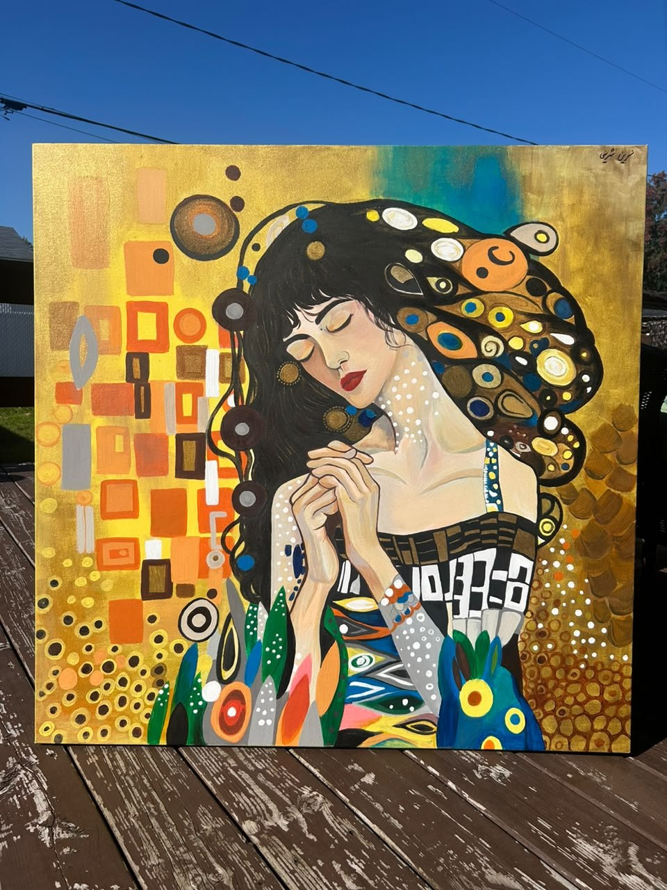

Selected
Works.
Painting, drawing, and mural art. An evolving selection of original work by visual artist and art educator Nasrin Sharifi.
Explore the collection ↗Works
Selected artwork / 01—09Nasrin
Sharifi.
A visual artist and art educator based in Ottawa, Canada.
With a background in graphic design, visual arts, and art research, Nasrin works across painting, drawing, illustration, and mural art. Her practice brings together different forms of visual expression.
She has previously taught art to children and adults in art schools. Her practice includes original work as well as commissioned creative projects.
Art lessons
in Ottawa.
Nasrin has experience teaching art to both adults and children in art schools. Inquiries about private art instruction in English and art education opportunities are welcome.
Ask about art lessons ↗Art & commissions.
For inquiries about original artwork availability, custom paintings, murals, creative projects or collaborations, contact Nasrin directly. Prices are provided by inquiry only.
Instagram · @nassrin.art ↗